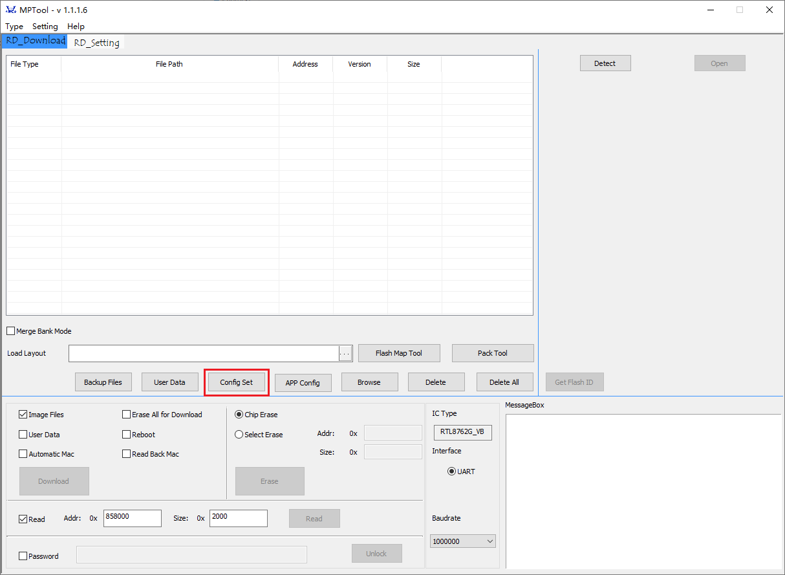
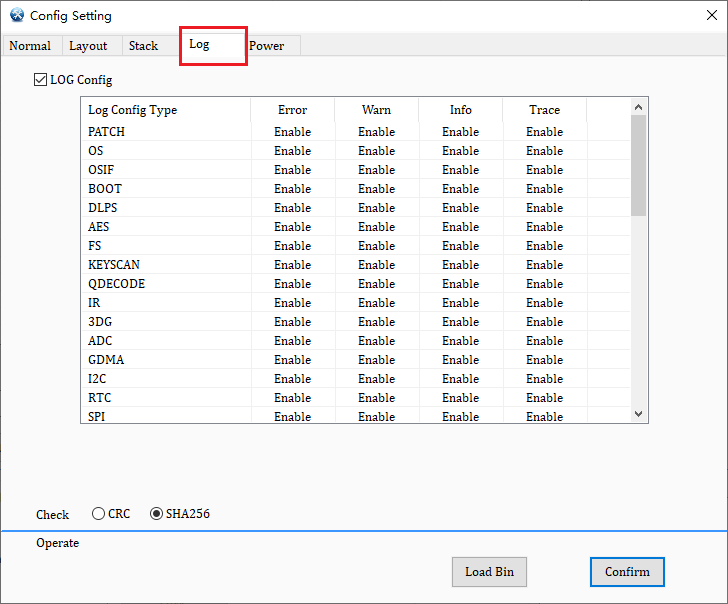

Debug System
Debug system is a critical technique in the software development process. It's a collection of tools and techniques used to detect and fix errors or issues in software programs. Its main purpose is to help developers identify and resolve various problems encountered during the development and operation of programs, thereby improving software quality and reliability. In debug system, developers can inspect register values and understand the runtime code state by setting breakpoints, single-stepping, logging, and other methods.
Two debug methods provided by RTL87x2G are listed below:
Use log mechanism to track code execution and data.
Use ARM Keil MDK or J-Link Commander and SWD for debug, adding/removing breakpoints, and accessing/tracing Memory, etc.
Log Mechanism
Log mechanism is an important tool in software development that helps developers monitor, debug, and maintain software systems by recording various events and state information during program execution. The log of RTL87x2G is viewed through Debug Analyzer tool provided by Realtek, which is designed to simplify the user's debug process. Its goal is to optimize the identification and resolution of software issues, building a more efficient development cycle. For details, please refer to Debug Analyzer Tool.
RTL87x2G reserves P0_3 by default as the Log UART output pin, but the log function can also be reconfigured to other pins. The Log UART output pin connects to the PC via UART-to-USB, where Debug Analyzer receives log data through the COM port on PC. The usage of Debug Analyzer is introduced in detail below.
Debug Analyzer
The steps for use are as follows.
Open
DebugAnalyzer.exe, and click on the main interface.In the [Detail Settings] interface:
Select the COM port corresponding to the LOG UART under Serial Port.
Select the appropriate
App.traceand any other necessary traces under App Trace File.Click confirm at the bottom right. (
App.traceis generated in the same directory location asApp.binafter the APP program is compiled.)
Click Start on the main interface to begin.

Debug Analyzer Settings
Debug Analyzer also offers some advanced features.
Log Filter: Filters the display, popping up a new window that only shows logs that meet the filter criteria.
Clear: Clears the logs in the display box.
Note
Debug Analyzer automatically saves log files, naming them according to the port number and generation time, such as COM5_2015-06-12_18-05-00.log, stored in the DebugAnalyzer installation path DebugAnalyzer\DataFile.
Log Printing Interface
The log printing interface can be divided into the following four types:
Basic Printing Interface
Used for printing real-time logs, declared as follows.
DBG_BUFFER(T_LOG_TYPE type, T_LOG_SUBTYPE sub_type, T_MODULE_ID module, uint8_t level, char* fmt, uint8_t param_num, ...).
Parameter description:
- type:
Fixed as TYPE_RTL87X2G
- sub_type:
Fixed as SUBTYPE_FORMAT
- module:
Several predefined modules exist within T_MODULE_ID type, these modules are used to categorize logs. Debug Analyzer can recognize these modules and automatically add the module name before each printed log.
- level:
Log level, indicating the level at which the log should be printed, four categories are defined as follows:
Log Level |
Usage Scenario |
|---|---|
LEVEL_ERROR |
Critical error, the program cannot continue running (Log identifier: !!!) |
LEVEL_WARN |
Anomalous situation occurs, the program can continue running (Log identifier: !!*) |
LEVEL_INFO |
Important information (Log identifier: !**) |
LEVEL_TRACE |
Detailed debug information (Log identifier: none) |
Note
The DBG_BUFFER() interface allows up to 20 parameters.
Encapsulated Printing Interface
For different modules, the RTL87x2G encapsulates corresponding interfaces to print corresponding logs. Like the basic interface, it provides four log levels. The printed logs will start with the module name, such as [APP], [Flash], etc. Declared as follows.
{MODULE}_PRINT_{LEVEL}_{PARAMNUM}(...)
Parameter Description:
- MODULE:
Defined in
trace.h, including APP/GAP/USB/FLASH...- LEVEL:
Same as the four levels of the basic print interface, ERROR/WARN/INFO/TRACE
- PARAMNUM:
0 to 8, representing the number of log print parameters
Note
Do not exceed 8 parameters (if using the
DBG_BUFFER()interface, a maximum of 20 parameters is allowed).Try to include all parameters in a single print statement.
Auxiliary Print Interface
DBG_BUFFER() interface can only print integer types such as (d, i, u, o, x), character (c), and pointer type (p). When you need to print strings, binary arrays, or BT addresses, the following auxiliary print interfaces are required.
Interface |
Description |
Precautions |
|---|---|---|
TRACE_STRING(char* data) |
Directly print strings, placeholder %s |
Maximum string length is 240 bytes |
TRACE_BINARY(uint16_t length, uint8_t* data) |
Print binary data in hexadecimal format, placeholder %b |
Maximum binary data length is 240 bytes |
TRACE_BDADDR(char* bd_addr) |
Print a binary string in BT address format, converting character %s |
A single log can print up to 4 BT addresses, Example: Hex Array: 0xaa 0xbb 0xcc 0xdd 0xee 0xff –> Literal String: FF::EE::DD::CC::BB::AA |
Direct Print Interface
Printing logs by calling functions based on the DBG_BUFFER interface has a relatively small impact on system performance, but the real-time performance of printing is not high. This is because logs printed through these APIs are buffered and sent to the Log UART when the system is idle.
DBG_DIRECT is used to print real-time logs. This API has impact on the system because it sends data directly to the Log UART, preventing the system from continuing execution until the log is printed. Therefore, it is strongly recommended to use this API only in specific situations.
Before the system restarts
Scenarios with high real-time requirements
Print Example
The following example demonstrates the general usage of log APIs and the corresponding output on Debug Analyzer.
uint32_t n = 77777;
uint8_t m = 0x5A;
uint8_t bd1[6] = {0x00, 0x11, 0x22, 0x33, 0x44, 0x55};
uint8_t bd2[6] = {0xAA, 0xBB, 0xCC, 0xDD, 0xEE, 0xFF};
char* c1[10] = {'1', '2', '3', '4', '5', '6', '7', '8', '9', '0'};
char* c2[8] = {'a', 'b', 'C', 'd', 'E', 'F', 'g', 'H'};
char* s1 = "Hello world!";
char* s2 = "Log Test";
ADC_PRINT_TRACE1("ADC value is %d", n);
UART_PRINT_INFO3("Serial data: 0x%x, c1[%b], s1[%s]",..m, TRACE_BINARY(10, c1), TRACE_STRING(s1));
GAP_PRINT_WARN6("n[%d], m[%c] bd1[%s], bd2[%s], c2[%b], s2[%s]", n, m,..TRACE_BDADDR(bd1), TRACE_BDADDR(bd2),TRACE_BINARY(8, c2), TRACE_STRING(s2));
APP_PRINT_ERROR0("APP ERROR OCCURRED...");
Corresponding output results on Debug Analyzer.
00252 10-25#17:12:02.021 132 10241 [ADC] ADC value is 77777
00253 10-25#17:12:02.021 133 10241 [UART] !**Serial data:..0x5a, c1[31-32-33-34-35-36-37-38-39-30], s1[Hello world!]
00254 10-25#17:12:02.022 134 10241 [GAP] !!*n[77777], m[Z] bd1[55::44::33::22::11::00],bd2[FF::EE::DD::CC::BB::AA],c2[61-62-43-64-45-46-67-48], s2[Log Test]
00255 10-25#17:12:02.022 135 10241 [APP] !!!APP ERROR OCCURRED...
Log Control
Users can select the log levels for printing through the following two methods:
MP Tool Config Control
MP Tool serves as a production tool, supporting both debug and production modes. During debug, you can configure whether to enable various log levels corresponding to each module. Usage is as follows. For details, please refer to: MP Tool.
First, click Config Set on the main page.

MP Tool Main Page
Next, click the Log tab on the [Config Set] page and double-click to modify the Enable/Disable status for the corresponding module and level. Finally, click Confirm at the bottom right to generate the System Config File and flash it.

MP Tool Config Set Page
{kind=link}
{kind=link}
Log Control Interface
Sometimes it is necessary to control the enabling and disabling of certain logs. One way is by setting the Config File in the MP Tool and programming the Config File into the RTL87x2G. If there is a need to frequently change the log print level, this method is not flexible enough, as reprogramming the System Config File each time is inconvenient. Therefore, the SDK provides 3 APIs to control specific levels of specific modules, namely:
Here are some scenarios to help users understand how to use the log control APIs in applications. Assume the log print function is already enabled and the Config File has set all log trace masks to 1, meaning logs of all levels for all modules will be printed.
Scenario 1
Disable all trace and info level logs for the APP module.
int main(void) { log_module_trace_set_update(MODULE_APP, LEVEL_INFO, false); log_module_trace_set_update(MODULE_APP, LEVEL_TRACE, false); ... }
Scenario 2
Only open the log for the PROFILE module.
int main(void) { uint64_t mask[LEVEL_NUM]; memset(mask, 0, sizeof(mask)); log_module_trace_init(mask); log_module_trace_set_update(MODULE_PROFILE, LEVEL_ERROR, true); log_module_trace_set_update(MODULE_PROFILE, LEVEL_WARN, true); log_module_trace_set_update(MODULE_PROFILE, LEVEL_INFO, true); log_module_trace_set_update(MODULE_PROFILE, LEVEL_TRACE, true); ... }
Scenario 3
Disable the trace level logs for PROFILE/PROTOCOL/GAP/APP modules.
int main(void) { log_module_bitmap_trace_set(MODULE_BIT_PROFILE | MODULE_BIT_PROTOCOL | MODULE_BIT_GAP | MODULE_BIT_APP, LEVEL_TRACE, false); ... }
Scenario 4
Disable all trace and info level logs except for the APP module, including disabling BT Snoop log.
int main(void) { for (uint8_t i = 0; i < MODULE_NUM; i++) { log_module_trace_set_update((T_MODULE_ID)i, LEVEL_TRACE, false); log_module_trace_set_update((T_MODULE_ID)i, LEVEL_INFO, false); } log_module_trace_set_update(MODULE_APP, LEVEL_INFO, true); log_module_trace_set_update(MODULE_APP, LEVEL_TRACE, true); log_module_trace_set_update(MODULE_SNOOP, LEVEL_ERROR, false); ... }
Note
If the LEVEL_ERROR log for MODULE_SNOOP is enabled, Debug Analyzer will generate a BT Snoop log file
*.cfa.If the log for MODULE_SNOOP is disabled, no BT Snoop log will be generated, as seen in Scenario 2 and Scenario 4.
SWD Debug
The RTL87x2G implements three basic debug interfaces:
run control
breakpoint
memory access
Note
The RTL87x2G supports SWD and does not support JTAG.
ARM Keil MDK SWD Debug
First, correctly install and configure ARM Keil MDK and the main debug features supported by SWD RTL87x2G as shown on the UI.
Running control : Running/Reset/Step
Breakpoints: Add/Delete/Conditional
Debug Function Windows
Core registers: Monitor/modify MCU register values.
Disassembly: Display the assembly code executed by the program, or display mixed with source code.
Source code: View C code, support breakpoints and real-time display of variables.
Variable watch: View the values of monitored variables.
Memory: Display/Modify the memory under investigation, supports direct address input and variable address input.
Call stack and local variable: Display the current call stack, as well as local variables (i.e., variables on the stack).
Note
Sometimes you may encounter an issue where the image cannot be successfully downloaded to flash, or even if successfully connected with J-Link, SWD cannot be found. In such cases, you can perform the following checks:
Change the debug clock to a smaller value (for example, from 2MHz to 1MHz), or use a shorter SWD debug cable.
The IC may have already entered the DLPS mode. Reset the IC, and the system will remain in an active state for 5 seconds.
Check if the SWD feature is disabled in APP.
J-Link Commander SWD Debug
Before using J-Link Commander, first add device information and configure the flash algorithm. This way, bin file and data can be directly downloaded to flash through J-Link Commander.
Create a folder in the J-Link installation directory (the directory where
JLink.exeis located):Devices\Realtek\RTL87x2G.Locate the files
RTL87x2G_FLASH.FLMandRTL876x_LOG_TRACE.FLMfrom the SDK (undersdk\tool\flashdirectory), and copy them toDevices\Realtek\RTL87x2G.Open the
JLinkDevices.xmlfile in the J-Link installation directory, and add the device download algorithm information below.
<Device> <ChipInfo Vendor="Realtek" Name="RTL87x2G" Core="JLINK_CORE_CORTEX_M33" WorkRAMAddr="0x00130000" WorkRAMSize="0x8000"/> <FlashBankInfo Name="QSPI Flash" BaseAddr="0x04000000" MaxSize="0x01000000" Loader="Devices/Realtek/RTL87X2G/RTL87x2G_FLASH.FLM" LoaderType="FLASH_ALGO_TYPE_CMSIS" AlwaysPresent="1" /> <FlashBankInfo Name="QSPI Flash" BaseAddr="0x08000000" MaxSize="0x10400000" Loader="Devices/Realtek/RTL87X2G/RTL876x_LOG_TRACE.FLM" LoaderType="FLASH_ALGO_TYPE_CMSIS" AlwaysPresent="1" /> </Device>
Open the J-Link Commander command window, and sequentially enter connect, RTL87x2G, and s. Seeing the command Cortex-M33 identified. indicates a successful connection.

J-Link Commander SWD Debug
After successfully connecting to SWD, you can proceed to debug using the commands supported by J-Link Commander. Common commands are as follows:
Common Command Descriptions Command
Description
h
halt cpu
r
reset cpu
g
go
s
step
setbp
set breakpoint
mem32
read data from specified address
w4
write data to specified address
erase
erase flash
loadbin
program bin file to flash
savebin
save data from flash as bin file
?
input '? to get all supported commands

J-Link Commander SWD Debug Command Query
See Also
Please refer to the relevant API Reference: